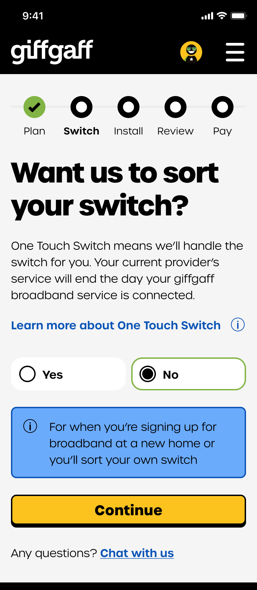
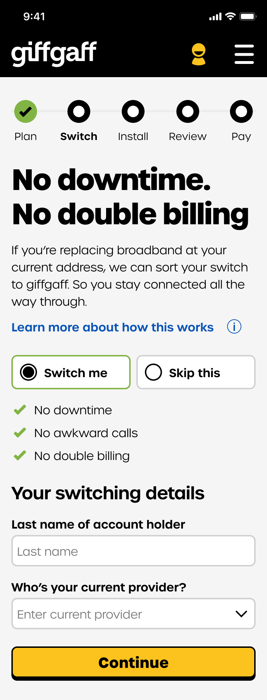
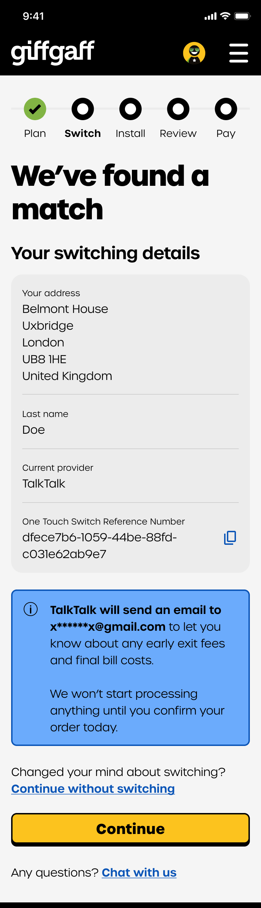
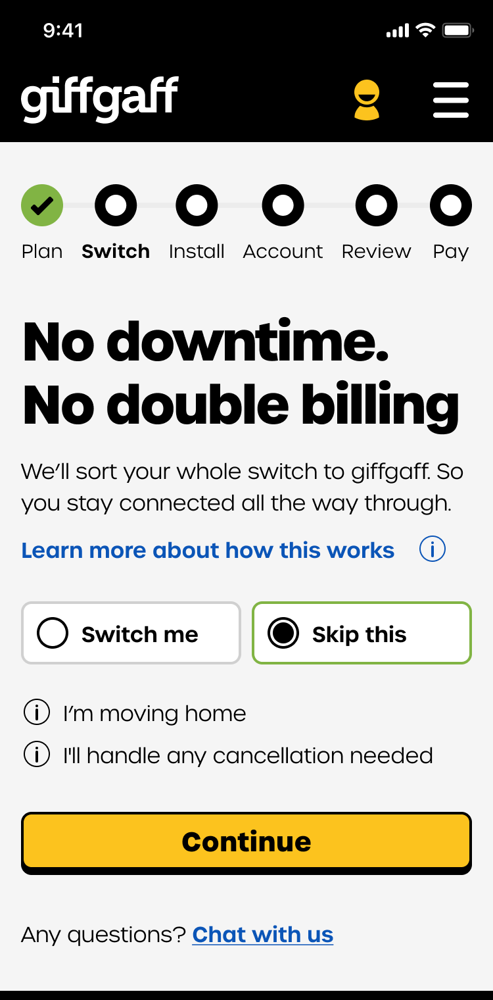
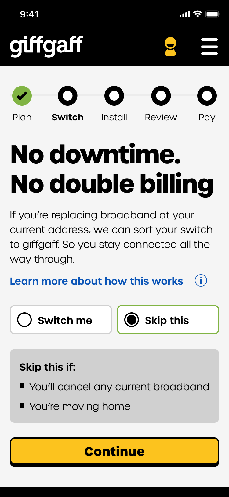

Case study 1 of 6 · Switching step
One Touch Switch: making a regulated step feel simple
Ofcom's One Touch Switch lets people move broadband provider without ringing the old one. Our version of that step was where people struggled most. With no dedicated researcher on the team, I planned and ran 5 rounds of testing myself and turned a jargon-led screen into a set of plain promises.
- Role
- Content designer, planning and running the research
- With
- Product design, product management, engineering
- When
- Launch copy 2025, failed-match redesign November 2025, benefit-led rewrite March to July 2026
- Methods
- Moderated interviews, unmoderated Maze studies (n=5 to 40), comprehension tests, closed card sort, A/B test
- 10%→90%completed the moving-home task the right way, iteration 3 to 5Only the words changed between rounds 4 and 5. About a quarter faster too.
- 18 of 20understood the benefit-led switch copyEase 4.8 out of 5. The old copy stalled 4 of 5 people in interviews.
- 5.8→9.2out of 10 for clarity on cancelling, failed-match redesignTask success went to 100% in the final round
Why this step mattered
The switching step was where more people gave up than anywhere else in the journey. And the people switching matter most: they already have broadband and already know they want ours.
The launch version had a second problem. Some people were switching when they hadn't meant to, and others dropped out before booking an install. Easy to get through, hard to understand. Not a great combination.
What the research found
In moderated interviews, 4 of 5 people stalled on the words "One Touch Switch". It's the regulator's name for the process and it meant nothing to them. 3 of the 5 still thought they'd have to phone their old provider, which is the one thing the process removes.
"'One touch switch', I think it was just a fancy name for no reason really."
Participant, moderated study, April 2026
When the same people saw a version that led with what we do for them, all 5 said they felt more confident and got through it faster. Ease went from 4.2 to 4.9 out of 5. The recommendation was simple enough: stop explaining the mechanism and start naming the benefits.
What I changed
Lead with the promises, not the process
The step now opens with the 3 things people are worried about, answered before they can ask. The regulator's name stays on the page for anyone who knows it, but it doesn't carry the meaning any more.
Plan your switch, opening line
No downtime. No awkward calls. No double billing.
"No downtime. No double billing. Yes, switch me. Get me switched. Lots of very clear writing, seems very logical."
Participant, Maze study, July 2026
Launch version, 2025

Iteration 5, 2026

Say what the old provider will do, and mean it
People wanted to know their old contract was actually closed, not just that we'd asked. Naming the provider and the outcome on the confirmation screen worked: 20 of 20 understood it, with ease at 4.9 out of 5.
Then a smaller word undid some of that trust. In a later round the line said the old provider "should" have stopped billing. 3 participants picked up on it without being prompted. Reassurance about the old account closing scored 62%, against 81% for the promises about downtime and double billing. It was the one thing people wanted to be sure about, and we'd hedged it. The fix swaps "should" for a confirmed, dated closure status.
Switch screen, worked
TalkTalk will stop billing you.
Closure message, didn't
TalkTalk should have stopped billing you.
Match found, launch version

The safety net for people moving home
If you're moving to a new address you shouldn't switch at all, because you're not replacing a service in the same place. The first design put that in 2 lines of small print under the buttons, and it failed hard: 14 of 20 overlooked them and 11 of 20 assumed "switch me" applied to them. Only 6 of 20 even found the safety net (ease 2.1 out of 5), and 1 in 10 took it.
Iteration 4 redesigned the step and got 3 in 10 through. Iteration 5 changed only the words, and 9 in 10 completed the task the right way, about a quarter faster than the round before.
- Iteration 310%Safety net in small print
- Iteration 430%Step redesigned
- Iteration 590%Copy changes only, about a quarter faster
Iteration 5, the words that did it
Skip this if: you'll cancel any current broadband yourself, or you're moving home.
If you're moving somewhere new you can skip this step.
Iteration 3

Iteration 5

The round in between taught me something I now check every time. Iteration 4 scored 4.5 out of 5 for ease while 7 in 10 people took the wrong route and never knew it. People rated the experience they thought they'd had. The path data showed the one they'd actually had. Iteration 5's ease score was a bit lower, and it was the first one the behaviour backed up.
When the switch doesn't match
Some switch requests don't match the old provider's records, and when that happened most people gave up. The screen offered "continue without switching", which confused people about what they were agreeing to. Over 6 rounds of testing, I rebuilt the copy around what happens next and what the person still controls. Clarity on cancelling went from 5.8 to 9.2 out of 10, anxiety dropped to 2.2 out of 10, confidence went up to 9.8, and the final version had a 100% task success rate.
Help content that matches the journey
The help centre had one long article about switching that tried to cover joining us and leaving us at the same time. I split it into 2 clear journeys, one each way, so you get the half that applies to you and the support bot has a clean source for each.
What happened next
The user-centred design (UCD) approach behind this work (desk research, then testing in Maze, then a live A/B test) is now the team's standard route for changes to the journey.
A regulator's label isn't a heading. And don't trust an ease score the path data doesn't back up.
Screens are from the research prototypes and design files, with placeholder names and providers.